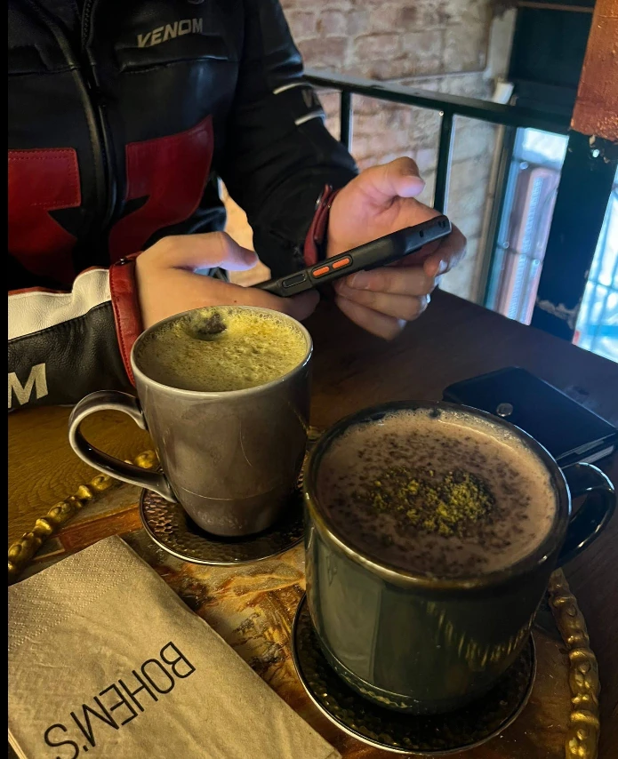
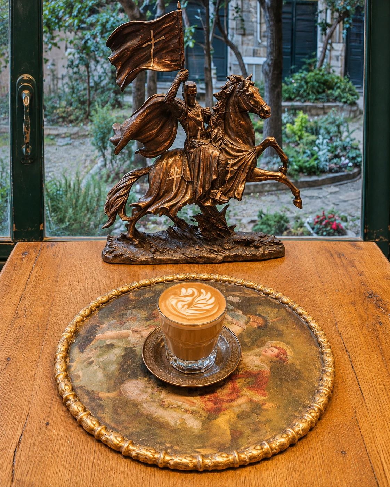
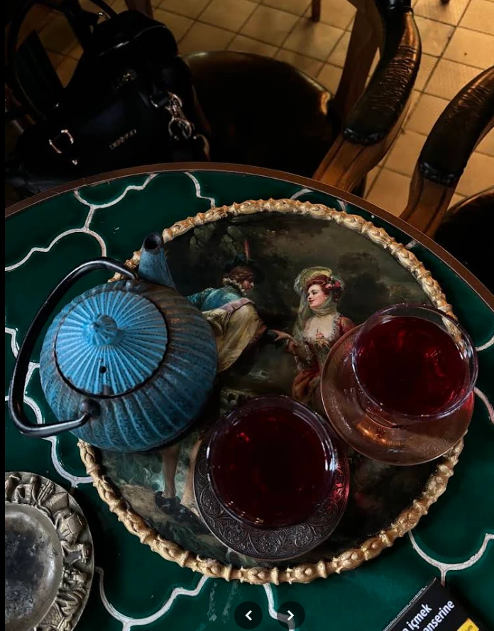
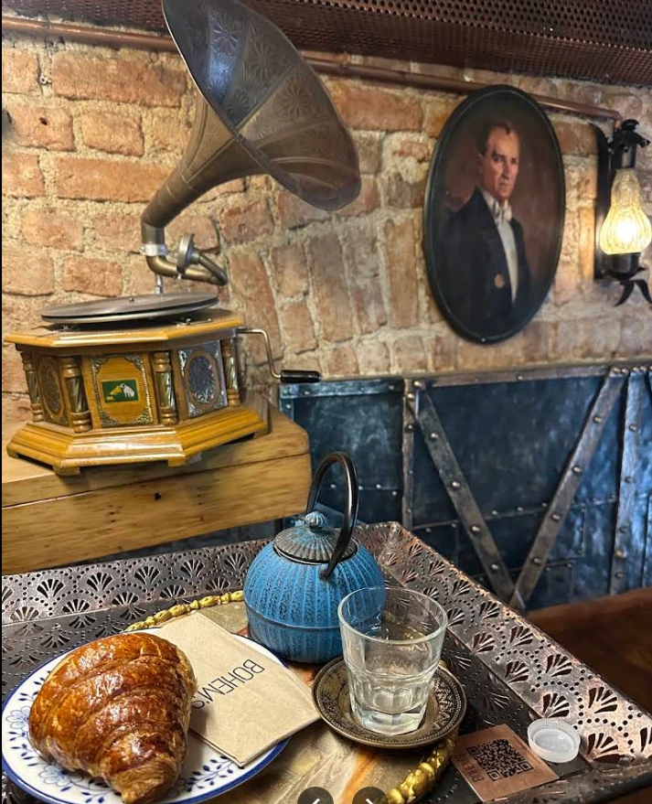
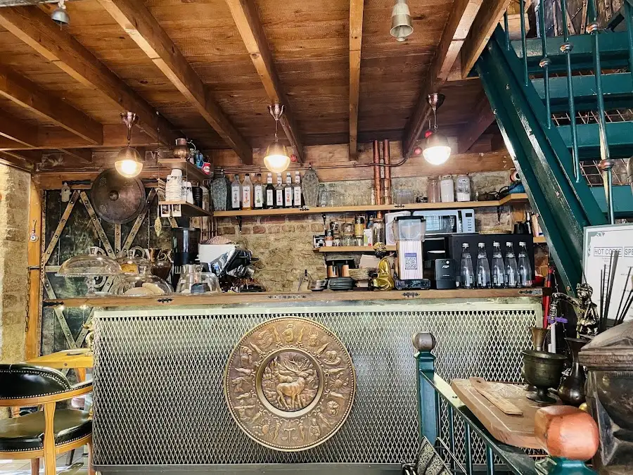
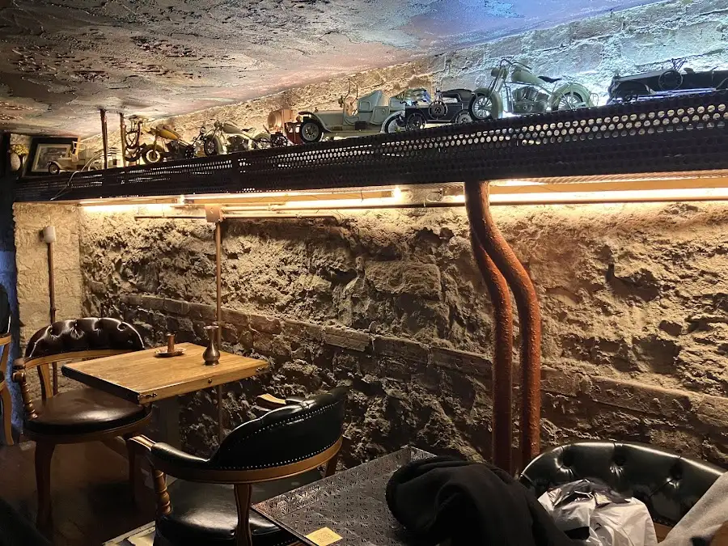
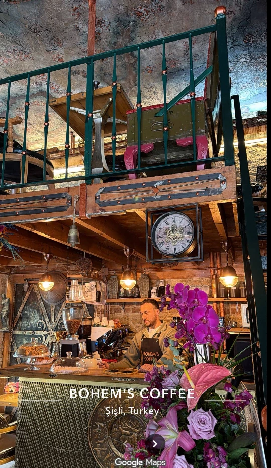

Bir tepside iki fincan
Dokulu fincanlar, kabartmalı tabaklar ve desenli bir tepsi. Bohem’s’te kahve sunumu da masanın bir parçası.
Arif Paşa Apartmanı · Harbiye

Pencere kenarında resimli bir tepsi, cam bardakta kahve ve sancağını kaldıran bronz bir atlı.

Çay servisi
Mavi demliğin yanında iki bardak. Bardakların altında kabartmalı tabaklar, tepsinin ortasında küçük bir resim. Bir yudum almadan önce bakacak çok şey var.
Kahve ve kruvasan

Dokulu fincanlar, kabartmalı tabaklar ve desenli bir tepsi. Bohem’s’te kahve sunumu da masanın bir parçası.

Desenli porselende bir kruvasan, yanı başında mavi demlik. Arkadaki duvarda gramofonun yanında Atatürk’ün portresi asılı.
Arif Paşa Apartmanı
Ahşap kirişler, yeşil merdiven ve tezgâhın ortasındaki kabartma. Kahve, bu küçük ayrıntıların arasında hazırlanıyor.

Bir yanda eski eşyalarla dolu raf, diğer yanda bahçeye bakan pencere. Oturacak köşeni seçmek için önce etrafa bak.

Tezgâhı süsleyen çiçekler
Mor orkideler, pembe güller ve ahşap tezgâh. Kapıdan girince ilk bakışta kaçabilecek bir Bohem’s ayrıntısı.

Elmadağ, Şişli
Listelenen saatler 08.00–22.00
Yola çıkmadan önce güncel saatleri telefonla sorabilirsin.